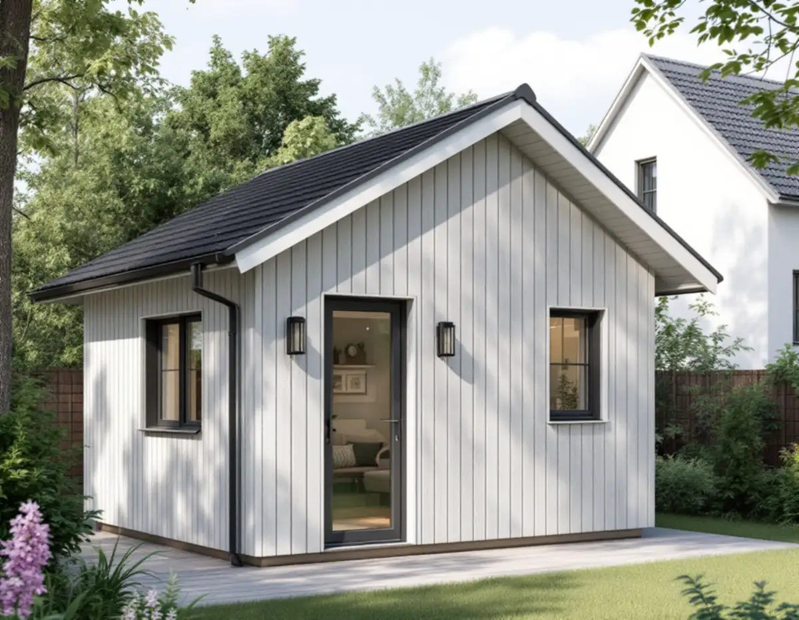
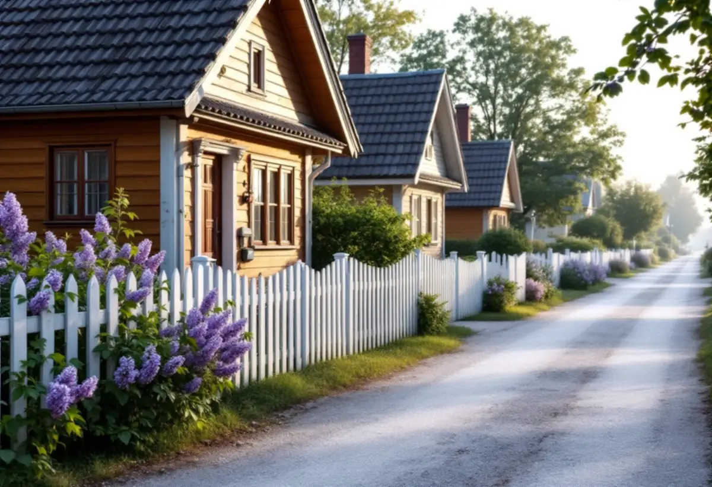

Solnakartan
Detaljplan, kulturmiljö och strandskydd kontrolleras.

Solna stad skriver att stora delar av staden är kulturhistoriskt särskilt värdefulla, och där krävs alltid bygglov för ett komplementbostadshus.
Beskriv jobbet kort.
Något blev fel. Kontrollera uppgifterna eller ring 08 12 410 276.
Vi tittar på jobbet på plats innan du får offert.
Du ser vad som ingår och vad det kostar.
Vi drar av ROT direkt och sköter ansökan.
Geal Entreprenad AB, Bromma. Org.nr 559303-7566.

Geal Entreprenad AB kontrollerar din fastighet i Solnakartan, tar fram handlingarna och bygger huset nyckelfärdigt.
Solna stad skriver att du alltid behöver söka bygglov för en komplementbyggnad eller ett komplementbostadshus inom ett kulturhistoriskt värdefullt område eller till en kulturhistoriskt värdefull byggnad. Staden lägger till att stora delar av Solna är kulturhistoriskt särskilt värdefulla.
Bygglov krävs också om huset placeras närmare tomtgräns än 4,5 meter utan grannens skriftliga medgivande, närmare än 30 meter från ett järnvägsspårs mitt, utanför tomten eller om det blir större än vad lagen tillåter. Inom detaljplan är gränserna 30 kvadratmeter byggnadsarea, 4,0 meter i nock och 45 kvadratmeter sammanlagt för alla komplementbyggnader på tomten. Huset får inte heller vara större än bostadshuset det kompletterar.
Solna stad listar ett stort antal sammanhängande kulturhistoriskt värdefulla miljöer, där helhetsintrycket är det viktiga. Bland dem finns flera villa- och småhusområden: Råsta egnahem, villabebyggelsen i norra Råsunda, Råsunda villastad, Gamla Hagalund, Bergshamra by, Alnäs och Stocksundstorp samt Solna kyrkby med radhusbebyggelse. Listan bygger på skriften Kulturmiljöer i Solna från 1988.
Står villan i någon av de miljöerna behöver ett nytt gårdshus anpassas till helheten – i placering, storlek, takform och material. Staden har också en karta över kulturhistoriskt klassade byggnader. Är själva villan utpekad krävs lov även om tomten ligger utanför en sammanhängande miljö.
Till en bygglovsansökan vill Solna stad ha en situationsplan baserad på nybyggnadskarta typ C, plan-, fasad- och sektionsritningar, en arearedovisning, en översiktlig beskrivning och en material- och kulörbeskrivning med NCS-koder. Ibland behövs fler underlag, till exempel markplaneringsritningar med befintliga och nya marknivåer om tomten lutar.
Staden skriver att en kontrollplan ska skickas in och fastställas innan startbeskedet. Bygger du som privatperson en komplementbyggnad till ett en- eller tvåbostadshus behöver du ingen certifierad kontrollansvarig. Enligt staden är handläggningstiden högst tio veckor, och en komplett ansökan kortar den.
Stora delar av Solna har detaljplan, och i Solnakartan går det att söka på fastigheten för att se både planen och om byggnaden eller området är kulturhistoriskt värdefullt. Ett lovfritt komplementbostadshus till en villa får strida mot detaljplanen, men inte mot skyddsbestämmelser om markförorening, olyckor eller översvämning.
Ligger tomten nära en strand kan strandskyddsdispens behövas. Vi kontrollerar allt det här innan vi ritar, så att du vet om det blir lov eller inte innan du bestämmer dig. Måtten och paragraferna finns samlade i reglerna för attefallshus, och vill du hellre bygga ihop med huset finns tillbyggnad i Solna.
Detaljplan, kulturmiljö och strandskydd kontrolleras.
Vi mäter befintliga byggnader, gränser och marknivåer.
Ritningar, arearedovisning och kulörbeskrivning med NCS-koder.
Bygglov i värdefull miljö, annars anmälan för installationerna.
Grund, stomme, tak och installationer fram till nyckelfärdigt.
Huset tas i bruk när slutbeskedet har kommit.
Skatteverket skriver att det inte går att få rotavdrag för att bygga en helt ny bostad, och inte heller för ett nytt hus, en friggebod, ett garage eller en liknande fristående byggnad. Ett komplementbostadshus står fritt på tomten, så kostnadsförslaget för huset räknas utan avdrag.
Om bygglov och kulturmiljöanpassade ritningar behövs, husets storlek och planlösning, kök och badrum, grundläggning och marknivåer, och hur långt ledningarna ska dras. Efter ett gratis platsbesök får du ett skriftligt kostnadsförslag.
Komplementbostadshus på tomten.
Attefallshus →Takbyte, takbesiktning och plåtarbeten.
Takläggare i Solna →Råsunda, Stocksundstorp och Råsta.
Takrenovering i Solna →Bostadsrätt, stambyte och villor.
Badrumsrenovering i Solna →Ritningar, kontrollplan och slutbesked.
Byggföretag i Solna →Radhusen, föreningen och lovet.
Fasadmålning i Solna →Putsade villor och krav på material.
Fasadrenovering i Solna →Råsunda, bygglovet och handlingarna.
Fönsterbyte i Solna →Fönster från 1950-talet, kitt och fogar.
Fönsterrenovering i Solna →Bostadsrätter i Råsunda, Hagalund och Huvudsta.
Golvläggare i Solna →Ta fram och slipa trägolvet under mattan.
Golvslipning i Solna →Bostadsrätter, fläktar och Råsundas villor.
Köksrenovering i Solna →Villor, radhus och lägenheter i Solna.
Målare i Solna →Plåt i Solnas kulturmiljöer.
Plåtslagare i Solna →Väggar, dörrar, balkong och radhus.
Snickare i Solna →Gatusidan, gårdssidan och konstruktionen.
Takbyte i Solna →Tapet efter husets ålder och underlag.
Tapetsering i Solna →Kulturmiljöerna och lovet.
Tillbyggnad i Solna →Hela lägenheten, elen inräknad.
Totalrenovering i Solna →Eller ring 08 12 410 276, mån–fre 08–17.
Beskriv jobbet kort.
Något blev fel. Kontrollera uppgifterna eller ring 08 12 410 276.